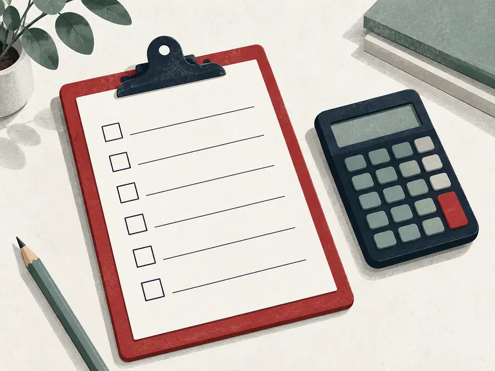
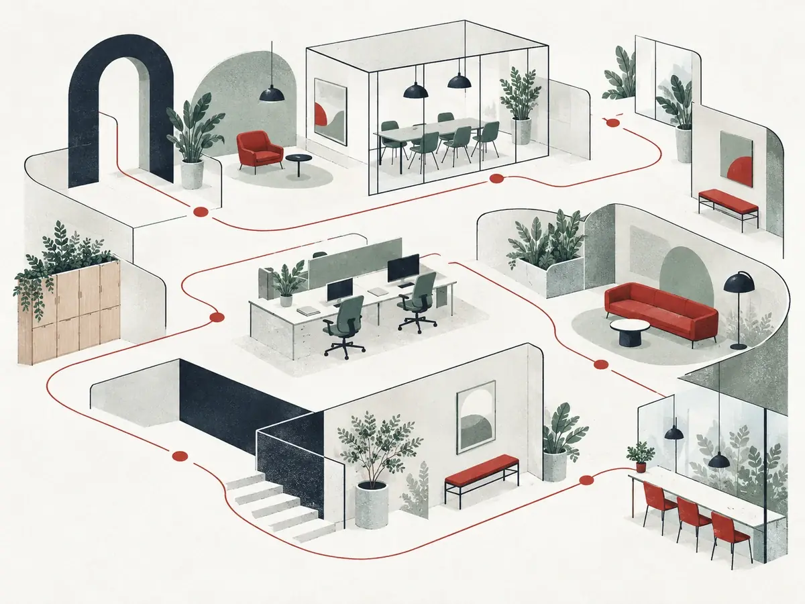

01この順番で進みます
予約から、見積もりまで。
- 1
予約
下の申し込み、または電話で。希望の日時と、事務所かオンラインかを選んでください。返信は2営業日以内が目安です（見本上の設定）。
このとき決めること日時・相談の方法
- 2
準備
このページのチェックリストで、書類をそろえます。オンラインの場合は、写真やPDFで事前に送っていただくこともできます。
用意するもの状況ごとのリストを参照
- 3
面談（60分）
状況をうかがい、必要な作業を整理します。専門用語は、その場で言い換えます。
あると助かるもの聞きたいことのメモ
- 4
見積もり
面談の後、範囲・料金・期限を書面でお送りします。依頼するかは、持ち帰って決めてください。
このあと依頼しない場合も、連絡は不要です
02持ち物
持ち物のチェックリスト。
状況を選ぶと、必要なものだけが残ります。チェックはこの画面の中だけで使い、どこにも送信されません。印刷して持ってくることもできます。
状況を選ぶと、ここが絞り込まれます。
03迷った場合
よくある質問。
相談だけで終えてもいいですか。
はい。初回相談の後に見積もりをお送りしますが、依頼するかどうかはご自身で決めてください。こちらから何度もご連絡することはありません。
帳簿をまったくつけていません。それでも相談できますか。
できます。請求書や領収書の束、通帳の明細があれば、そこから一緒に整理します。
料金はいつ決まりますか。
面談の後にお送りする見積もりで決まります。作業の途中で料金が上がる場合は、その前に必ずお伝えします。
使っている会計ソフトに合わせてもらえますか。
多くの場合、いまお使いのソフトや表計算のデータのまま進められます。面談のときに、使っているものを教えてください。
オンラインでも同じ内容の相談ができますか。
はい。書類は写真やPDFで、事前に送っていただけます。
税理士登録番号はどこで確かめられますか。
実際のサイトでは、フッターと事務所の案内に記載します。この見本では、架空の事務所のため表示していません。
04場所と方法
事務所でも、オンラインでも。

- 事務所で
- 架空県結ノ浦市 港町通り（見本上の住所）。結ノ浦駅（架空）から徒歩5分。面談の部屋は個室です。
- オンラインで
- ビデオ通話で行います。予約の確認メールに、参加の方法をお送りします（見本）。
- 受付時間
- 平日 9:30–17:30（見本上の設定）
05予約
予約の申し込み。
相談だけでも大丈夫です。無理な勧誘はしません。返信は2営業日以内が目安です（見本上の設定）。